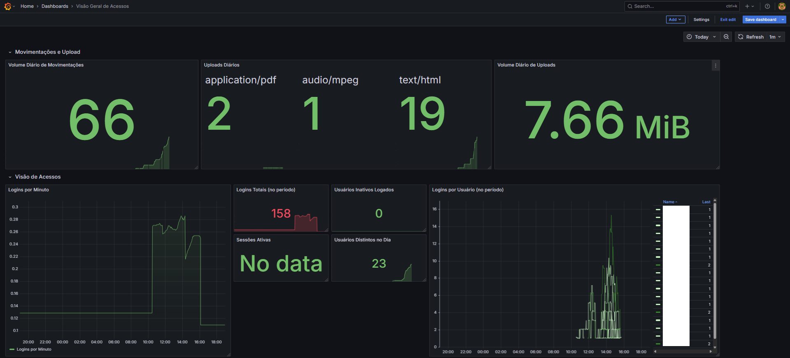

Engenharia de dados para monitoramento de sessões em tempo real, utilizando Prometheus, Grafana e um pipeline ETL assíncrono em Python.

Execução real do pipeline: Extração via Oracledb-Exporter e processamento assíncrono.
Em sistemas governamentais de larga escala, a visibilidade sobre quem acessa o quê e quando é vital. O desafio era extrair métricas de sessões de bancos de dados legados de alto tráfego sem impactar a performance do sistema principal.
Implementação de um pipeline agnóstico. O sistema consome métricas via Prometheus, processa alertas críticos em Python e armazena logs de auditoria em uma base PostgreSQL dedicada, garantindo isolamento total.
Prometheus & Oracledb-Exporter para coleta de métricas brutas.
Grafana para visualização analítica e alertas de segurança.
Python (Async) para extração e transformation de dados (ETL).
Docker Compose para orquestração de toda a stack.